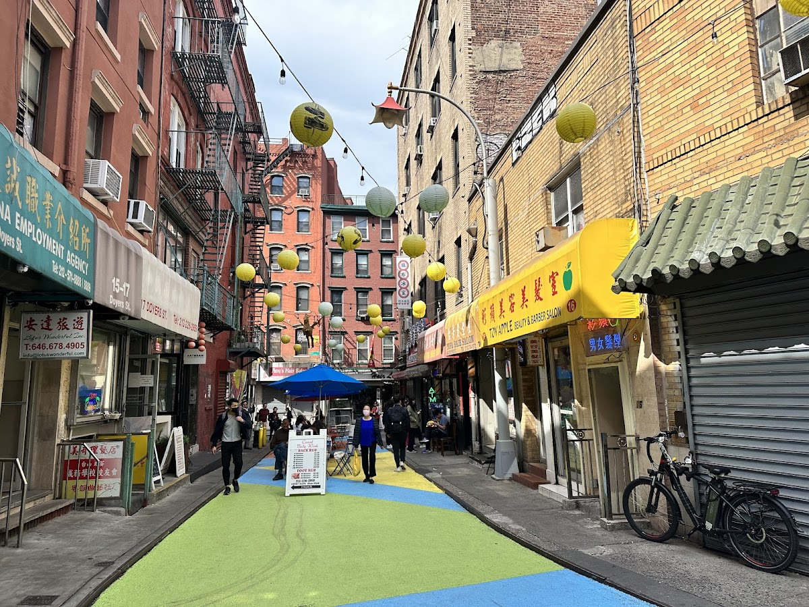
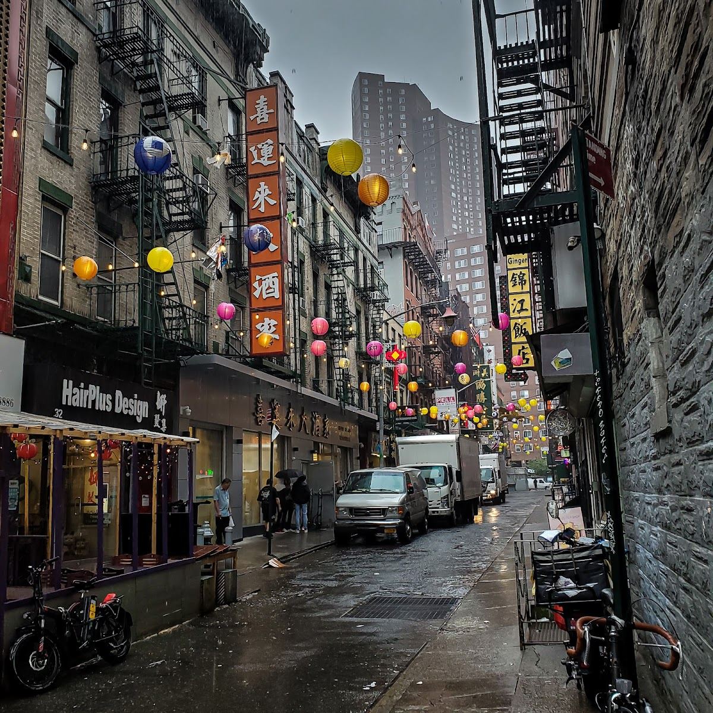
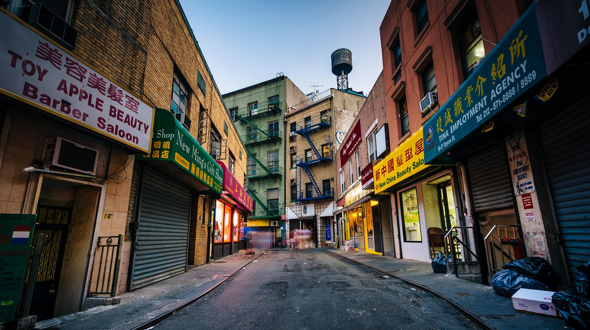
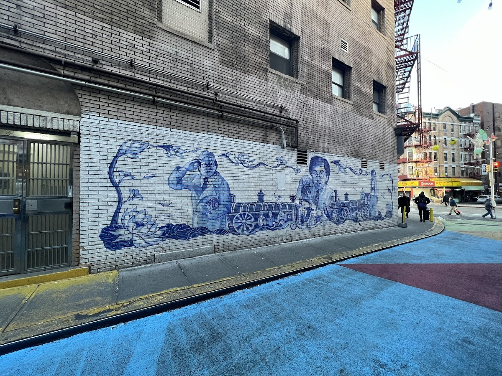
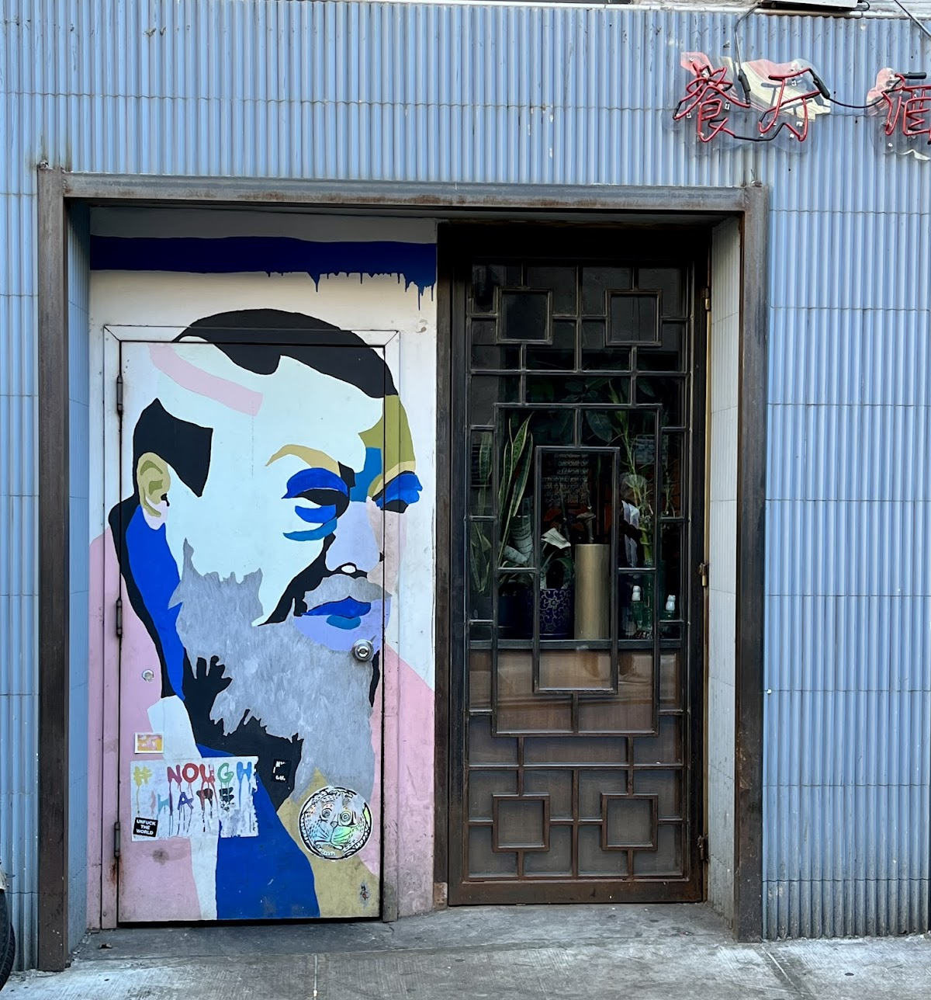

Streets
Doyer Street
A historic street in Chinatown, Manhattan, known for its sharp bend and cultural significance.
Background
Doyer Street, also known as the 'Bloody Angle,' has a storied past tied to the early Chinese immigrant community and gang activity in the late 19th and early 20th centuries. Today, it is a vibrant part of Chinatown, with restaurants and shops that reflect its cultural heritage.
Original AI-assisted background; not independently verified.
From the original map
Very nicely pedestrianized.
Check current access before visiting. A place on this map is not necessarily open to the public.
Nearby places
- Knickerbocker Village0.3 mi ↗
- South Bridge Towers0.5 mi ↗
- Freeman Alley0.6 mi ↗
- Rooftop Cape Cod0.8 mi ↗
Straight-line distances, not walking routes.
Discussion & corrections





40.71451, -73.99815 · Explore the surrounding area ↗